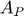

Contents
- Parámetros de la tecnología
- Calculo de la zona de agotamiento
- Calculo de la capacitancia del fotodiodo
- Calculo de densidad de corriente
- Optimizacion pixel APS CMOS
- Simulación de la optimización
- Conclusiones de la optimizacion
- Voltaje que produce un flujo de fotones
- Tabla de referencia para el flujo de fotones
- Extract of parasitic values
Parámetros de la tecnología
Se intoduciran los parametros de la tecnología
C_nwell = 10^16; % Concentracion de donadores Nd [1/cm^-3] C_psubstrate = 10^15; % Concentracion de aceptores Na [1/cm^-3] k_j = 1.38064852e-23; % Constante de boltzmann [J/K] k_ev = 8.62e-5; % Constante de boltzmann [eV/K] T = 300; % Temperatura absoluta [K] E_g = 1.12; % Energia de separacion de banda del Silicio [eV] q = 1.6e-19; % Carga del electron [Col] e_s = 10.45e-13; % Permitividad del silicio [F/cm] e_s_r = 11.7; % Permitividad del silicio respecto al e_0 e_0 = 1.04e-12; % Permitividad del vacio [F/cm] n_i = 1.45e10; % Concentracion intrinseca a temperatura ambiente [1/cm^-3] % B = 5.4e31; % B del silicio [(cm^2K)^-3] % n_i = B*T^3*exp(-E_g/(k_ev*T));
Por ejemplo, el calculo del voltaje built in o en una union pn compuesta por el sustratro tipo p y un pozo n-well es:
N_a = C_psubstrate; N_d = C_nwell; V_T = k_j*T/q; V_bi = V_T*log(N_d*N_a/n_i^2)
V_bi =
0.6364
Podemos ver en la siguiente sección que dara el mismo resultado.
Calculo de la zona de agotamiento
Se calculara el ancho de la zona de agotamiento en un eje vertical z, de una union entre un sustrato tipo p y un pozo N.
phi_n = k_j*T/q*log(N_d/n_i); % Potencial de la zona n [V] phi_p = k_j*T/q*log(N_a/n_i); % Potencial de la zona p [V] coef = N_a/N_d; % Coeficiente igual a x_n/x_p. distancia_type v_D = 2; % Voltaje que polariza el diodo en inversa [V]
Vemos que:
V_bi = phi_n+phi_p
V_bi =
0.6364
Luego, el ancho de la zona de agotamiento en micrometros es:
W = sqrt(2*e_s/q*(v_D + V_bi)*(1/N_a + 1/N_d)); % Ancho de zona de agotamiento del diodo [cm]
W_um = W*10000
W_um =
1.9463
Calculo de la capacitancia del fotodiodo
Con respecto a la capacitancia del fotodiodo tenemos que:
o bien:
Donde corresponde a la area activa del fotodiodo y  es el area lateral del fotodiodo. Tambien y corresponden a evaluada en y y corresponden a el voltaje de buit in en el area activa y en el area lateral. Por lo tanto si y corresponde a los lados activos del fotodiodo y la profundidad de la difusion n tenemos que:
a = 9/(10*1000); % largo horizontal: 5 [um] pero en [cm] b = 4.8/(10*1000); % largo vertical: 4 [um] pero en [cm] p = 2/(10*1000); % profundidad: 2 [um] pero en [cm] Area_activa = @(x,y) x*y; % (largo horizontal, largo vertical) Area_lateral = @(x,y,z)(2*x+2*y)*z; % (largo horizontal, largo vertical, profundidad) A = Area_activa(a,b); % en [cm^2] A_P = Area_lateral(a,b,p); % en [cm^2] fprintf('El area activa corresponde a %d [um^2] y el area lateral corresponde a %d [um^2]', (A/1e-8), (A_P/1e-8))
El area activa corresponde a 4.320000e+01 [um^2] y el area lateral corresponde a 5.520000e+01 [um^2]
Luego, calculamos y .
phi_0A = V_bi; phi_0P = V_bi*0.9; denom1 = sqrt(2*e_s/q*(phi_0A)*(N_a+N_d)/(N_a*N_d)); % [cm] denom2 = sqrt(2*e_s/q*(phi_0P)*(N_a+N_d)/(N_a*N_d)); % [cm] C_JO = e_s/denom1; % [F/cm^2] C_JOP = e_s/denom2; % [F/cm^2] C_neto = C_JO*A + C_JOP*A_P; fprintf('La capacitancia en el area activa sin V_PD es: %d [F/cm^2]\n', C_JO) fprintf('La capacitancia en el area lateral sin V_PD es: %d [F/cm^2]\n', C_JOP) fprintf('La capacitancia total sin V_PD es: %d [F]', C_neto)
La capacitancia en el area activa sin V_PD es: 1.092765e-08 [F/cm^2] La capacitancia en el area lateral sin V_PD es: 1.151875e-08 [F/cm^2] La capacitancia total sin V_PD es: 1.107910e-14 [F]
Ahora con ello calculamos la capacitancia del fotodiodo con la incorporacion del coeficiente de grading. Este coeficiente valdra cuando la union es abrupta (mas comun). En caso de ser gradual se ocupara .
V_PD = 3.75; M = 1/2; C_A = C_JO/((1 + V_PD/phi_0A)^M); C_P = C_JOP/((1 + V_PD/phi_0P)^M); C_PD = C_A*A + C_P*A_P; fprintf('La capacitancia en el area activa es: %d [F/cm^2]\n', C_A) fprintf('La capacitancia en el area lateral es: %d [F/cm^2]\n', C_P) fprintf('La capacitancia neta del fotodiodo es: %d [F]', C_PD)
La capacitancia en el area activa es: 4.162464e-09 [F/cm^2] La capacitancia en el area lateral es: 4.192994e-09 [F/cm^2] La capacitancia neta del fotodiodo es: 4.112717e-15 [F]
Calculo de densidad de corriente
La densidad de corriente total generada esta dada por la siguiente expresion, donde esta medida en [A/cm^2]

Donde el parametro corresponde al flujo de electrones [photons/sec cm^2]. Con ello procedemos a encontrar la corriente que entrega cierto flujo de fotones al area sensible.
x_1 = (2-0.1769)*1e-6*100; x_2 = (2+1.769)*1e-6*100; x_3 = 10e-6*100; alpha = 1e4; F_0 = 4.09e12; factor = q/alpha*((1-exp(-alpha*x_1))/(x_1) - (exp(-alpha*x_2)-exp(-alpha*x_3))/(x_3 - x_2)); j_ph = factor*F_0; I = j_ph*A; Corriente_deseada = 1e-9; f_0 = Corriente_deseada/A/factor; fprintf('El flujo de electrones %0.5e, produce una corriente de: %0.5e\n', F_0, I) fprintf('Para producir una corriente %0.5e, se necesita un flujo de: %0.5e', Corriente_deseada, f_0)
El flujo de electrones 4.09000e+12, produce una corriente de: 1.28974e-13 Para producir una corriente 1.00000e-09, se necesita un flujo de: 3.17118e+16
Optimizacion pixel APS CMOS
En la siguiente seccion se optimizara el tamaño de un pixel CMOS en la tecnologia CMOS . La función a optimizar consiste en la sensibilidad fotometrica , la cual se define como la señal de salida de un sensor de imagen iluminado por un nivel determinado de luz en un tiempo especifico de integracion. Se define matematicamente como:
Donde es la ganancia de conversion la cual es medida en y la receptividad medida en .
Por el lado de la ganancia de conversion , se calcula como sigue, donde es la capacitancia del fotodiodo.
Mientras que la receptividad , como las cargas fotogeneradas pueden ser colectadas por el area activa o periferica , tenemos que:
Por lo tanto, la sensibilidad fotometrica queda como:
Receptividad Activa: Con respecto a la receptividad del area activa, sabemos que depende directamente del area del fotodiodo, tanto como el area del Nwell como el area de la difusion N activa, por lo que se elije la opcion propuesta en la tesis
Donde es una constante medida en y corresponde a la longitud del cuadrado de la difusion activa y a la longitud del cuadrado del Nwell.
Receptividad Periferica: Con respecto a esta receptividad debemos considerar tres factores:
- La contribucion del tamaño del area en el bottom y en las paredes:
- La area no ocupada alrededor del pixel:
- La diffusion length de los portadores minoritarios:
Consecuentemente, es proporcional a estos tres terminos.

--> Con respecto a tenemos dos funciones propuestas por el modelo que van de 0 hasta A (area del pixel).
El bottom area de la zona de agotamiento tiene aproximadamente el tamaño del area activa del fotodiodo . En este caso, considera este aspecto. Luego, tenemos que tambien considera la diffusion length de los portadores minoritarios.
Donde representa el lado del area activa del fotodiodo (lado n-well). Se pueden considerar tres escenarios:
- : La contribucion de bottom no es importante porque no hay muchos fotocarriers suseptibles para ser capturado por la superficie bottom.
- : La contribucion bottom pasa a ser significante
- : La contribucion periferica es directamente proporcional al area bottom.
A la función anterior se le adhiere el área periferica, donde interviene la profundidad de la union. Así, finalmente se tiene
--> Con respecto a tenemos que considerar que si el area es muy grande, la contribución periferica será menor. De esta manera, este termino modela el area no ocupada del fotodiodo que rodea el area activa. Así, si representa el area total del pixel tenemos que:
--> Finalemnte, con respecto a describe el rol de la difussion length creados fuera del area activa del fotodiodo. Siendo la longitud maxima entre la depletion region y la esquina del fotodiodo region, tenemos que:
- : La probabilidad de adquerir minoritarios es alta
- : La probabilidad de adquerir minoritarios es baja
- : La contribucion es negativa, es decir hay perdidas de fotocarriers generados.
Finalmente esta dado por la siguiente expresión, donde la constante tiene unidades de medida .
Por lo tanto, retomando la sensibilidad fotometrica esta dada por:
Simulación de la optimización
Se introducen los principales parámetros.
clear; clc; q = 1.6e-19; % Carga del electron [Col] p = 2e-6; % profundidad: 2 [um] L_diff = 30e-6; % Diffusion lenght: 68 [um] C_JO = 1.0927e-8; % Capacitancia de union basal [F/cm^2] C_JOP = 1.15187e-8; % Capacitancia de union lateral [F/cm^2] V_PD = 2; phi_0A = 0.6364; phi_0P = 0.6364*0.8; M_J = 0.5; M_JP = 0.33;
Ahora calculamos S
l = (2:0.1:8)*1e-6; % Longitud de N-well [m] l_diff = [4, 6, 8, 12]*0.3e-6; % Longitud de N-active [m] A_pix = 32*0.3e-6*26*0.3e-6; % Area total del pixel [m^2] % A_pix = 41*0.3e-6*60*0.3e-6; % Area total del pixel [m^2] A = l.^2; % Area activa del Nwell [m^2] A_P = 4*l*p; % Area lateral del Nwell [m^2] L = (41*0.3e-6 - l)/2; % Longitud maxima de los carrier [um] C_A = C_JO/((1 + V_PD/phi_0A)^M_J); C_P = C_JOP/((1 + V_PD/phi_0P)^M_JP); C_PD = C_A*A*100*100 + C_P*A_P*100*100; % C_1 = 0.468; % Wavelength = 570 [nm] % C_2 = 0.29; % Wavelength = 570 [nm] C_1 = 0.215; % Wavelength = 490 [nm] C_2 = 0.107; % Wavelength = 490 [nm] R_A = []; R_P = []; S = []; R_P1 = []; R_P2 = []; R_P3 = []; A_um = A*1e6*1e6; A_P_um = A_P*1e6*1e6; for i = 1:length(l_diff) for j = 1:length(l) if l_diff(i)>=l(j) l_diff(i) = l(j); end % R_A(i,j) = C_1*A_um(j)^(l_diff(i)/l(j)); % Cae muy abrupto. % R_A(i,j) = C_1*l_diff(i)/l(j)*A_um(j); % Funciona pero no hay % maximo claro % prueba(i,j) = (l_diff(i)/l(j)); R_A(i,j) = C_1*0.5*A_um(j); % Funciona, maximo claro. R_P1(i,j) = log10(1 + l(j)/(2*L_diff))*A_um(j) + A_P_um(j); R_P2(i,j) = (A_pix-A(j))/A_pix; R_P3(i,j) = 1 - L(j)/L_diff; R_P(i,j) = C_2 * R_P1(i,j) * R_P2(i,j) * R_P3(i,j); S(i,j) = q*(R_A(i,j) + R_P(i,j))/C_PD(j); end end figure(1) hold on; plot(A_um, S(1,:)) plot(A_um, S(2,:)) plot(A_um, S(3,:)) plot(A_um, S(4,:)) hold off; title('Sensibilidad para distintos l_{diff}') legend('l_{diff} = 4\lambda','l_{diff} = 6\lambda','l_{diff} = 8\lambda','l_{diff} = 12\lambda') xlabel('Area del Nwell') ylabel('Sensibilidad') figure(2) hold on; plot(A_um, R_A(1,:)) plot(A_um, R_P(1,:)) hold off; title('Receptividad activa y periferica') legend('Receptividad activa','receptividad periferica') xlabel('Area del Nwell') ylabel('Receptividad') figure(3) hold on; % plot(A_um, R_P1(1,:)) plot(A_um, R_P2(1,:)) plot(A_um, R_P3(1,:)) hold off; title('Receptividad periferica: RP2 y RP3') legend('RP2','RP3') xlabel('Area del Nwell') ylabel('Valor') ylim([0 1.2]) pause(0.5) figure(4) hold on; plot(A_um, R_A(1,:)) plot(A_um, R_A(2,:)) plot(A_um, R_A(3,:)) plot(A_um, R_A(4,:)) hold off; title('Receptividad activa') legend('l_{diff} = 4\lambda','l_{diff} = 6\lambda','l_{diff} = 8\lambda','l_{diff} = 12\lambda') xlabel('Area del Nwell') ylabel('Receptividad Activa R_A') close(figure(1)) close(figure(2)) close(figure(3)) close(figure(4))
Conclusiones de la optimizacion
Se puede observar que en muchos casos, la sensibilidad maxima del pixel se encuentra bajo los limites de diseño, por lo que preferira consturir un area activa de aproximadamente 12 \lambdas por lado. Recordemos que esto nos dara un area mínima de:
A_min = (12*0.3)^2 % Area mínima en [um^2]
A_min = 12.9600
Voltaje que produce un flujo de fotones
En esta sección se determinara el flujo de fotones necesarios para producir tres fotocorrientes: 50pA, 150pA y 300pA. El voltaje en el fotodiodo parte en 3.75V cuya capacitancia es 3.5fF. Se agrega al calculo la capacitancia de los transistores M1 y M2 correspondientes. Para los calculos se aproximo a y profundidades del Nwell según los parametros de la tecnologia.
En el siguiente grafico se muestra el voltaje de salida en funcion del tiempo para tres flujos de fotones que inciden sobre el pixelv3.
i_ph = [50e-12 150e-12 300e-12]; V_d = 3.75; C_D = 4.1127e-15; Cgs_M1 = 5.01e-16; Cgg_M2 = 2.9e-15; C_FD = C_D + Cgs_M1 + Cgg_M2; t = (1:1:100)*1e-6; v(1,:) = V_d - i_ph(1)/C_FD.*t; v(2,:) = V_d - i_ph(2)/C_FD.*t; v(3,:) = V_d - i_ph(3)/C_FD.*t; alpha = 1e4; x_1 = (2-0.1769)*1e-6*100; x_2 = (2+1.769)*1e-6*100; x_3 = 10e-6*100; factor = q/alpha*((1-exp(-alpha*x_1))/(x_1) - (exp(-alpha*x_2)-exp(-alpha*x_3))/(x_3 - x_2)); % a = 5/(10*1000); % largo horizontal: 5 [um] pero en [cm] % b = 4/(10*1000); % largo vertical: 4 [um] pero en [cm] % A_pix = a*b; % Area del pixel [cm^2] Area = 30*16*0.3*0.3 - 4*9*0.3*0.3 - 3*4*0.3*0.3; A_pix = Area/((10*1000)^2); % Area del pixelv3 F_0 = i_ph/A_pix/factor; hold on plot(t*1e6,v(1,:)) plot(t*1e6,v(2,:)) plot(t*1e6,v(3,:)) ylabel('Voltaje de salida (V)') xlabel('tiempo (\mu s)') title('Voltaje en el diodo con distintos i_{ph}') legend(['F_0 = ',num2str(F_0(1)/10^15), 'x 10^{15} [ph/cm^2 s] '],... ['F_0 = ',num2str(F_0(2)/10^16), 'x 10^{16} [ph/cm^2 s] '], ... ['F_0 = ',num2str(F_0(3)/10^16), 'x 10^{16} [ph/cm^2 s] ']) grid on ylim([0 4]) % En forma adicional se adjunta una aproximacion a la magnitud del escalon % producida justo luego del reset. magnitud_escalon = Cgs_M1/(C_D + Cgg_M2 + Cgs_M1)*5 % Segun los resultados de Spice, este escalon tiene un valor de 228 mV, es % decir, la capacitancia $C_D$ es ligeramente mayor.
magnitud_escalon =
0.3334
Tabla de referencia para el flujo de fotones
En la siguiente tabla se adjuntan distintas fuentes de luz con su correspondiente aproximacion del flujo del fotones para considerarlos como referencia a los resultados anteriores.
- Clear sky Lux con flujo
- Room light Lux con flujo
- Full noon
 Lux con flujo
Lux con flujo 
- Noon less night Lux con flujo
Extract of parasitic values
Metal 1
Squares = 4*13; Perimeter = 4+26; Cap_A_Metal_1 = 0.1209*Squares*0.3*0.3 % Femto Farad Cap_P_Metal_1 = 0.1104*Perimeter*0.3 % N Active Squares = 9.5*4 Cap_A_N_Active = 0.9*Squares*0.3*0.3 % Femto Farad Total = Cap_A_Metal_1 + Cap_P_Metal_1
Cap_A_Metal_1 =
0.5658
Cap_P_Metal_1 =
0.9936
Squares =
38
Cap_A_N_Active =
3.0780
Total =
1.5594